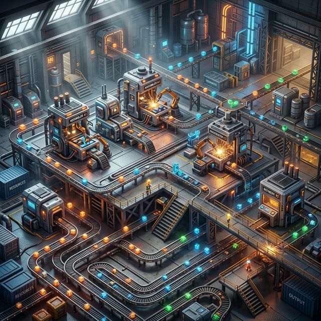
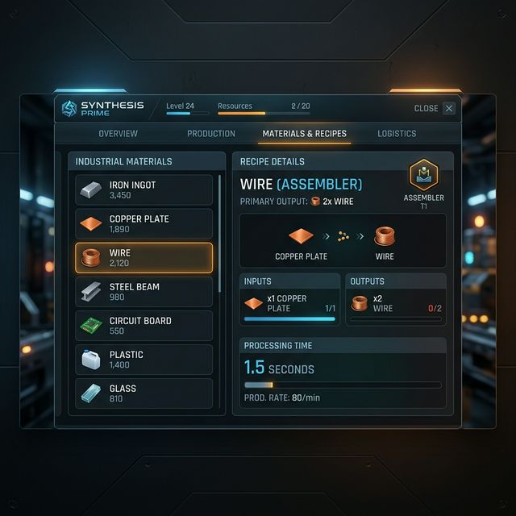
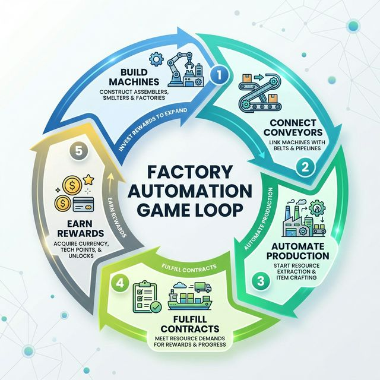

Problematic
The core challenge addressed by this project is the optimization of industrial logistics and resource management within a virtual environment. As production systems grow in complexity, the need for intuitive, scalable, and modular automation tools becomes critical.
- Efficiency: How to manage hundreds of items per minute without bottlenecking?
- Scalability: Ensuring the engine can handle large-scale grids and complex connection graphs.
- Optimization: Providing players with the data-driven tools needed to refine their supply chains.
Conception & Development
Built using Unity 6 and C#, the application leverages a modular architecture designed for high performance and extensibility.
- Grid-Based System: Precise machine placement and conveyor snapping.
- ScriptableObjects: Decoupled data management for items, recipes, and contracts.
- Vibe Unity Integration: Automated scene creation and component management for rapid iteration.
- State Management: Centralized managers for Economy, Contracts, and Building logic.
Factory in Action

Isometric view of a complex automated production line with interconnected machines.
UX Study
The user experience is centered around Clarity and Flow. We focused on reducing cognitive load while providing deep analytical tools.

Minimalist HUD and "Materials & Recipes" browser providing instant access to production data (P Key).
Gameplay Scenario
A typical session follows a cycle of strategic expansion and optimization:
- Step 1: Placement of primary miners and smelters.
- Step 2: Intelligent routing via conveyors & splitters.
- Step 3: Contract fulfillment for capital gains.
- Step 4: Research and unlocking of advanced machinery.

Conclusion & Future Works
This prototype successfully demonstrates the core loop of industrial automation. While the foundation is solid, several exciting avenues remain for expansion:
- Current State: Stable building, production, and economic systems with a tiered progression.
- Future Works: Advanced power management (Energy Grids), Multiplayer coop, and Planetary colonization mechanics.
- Polish: Implementation of higher-fidelity particle systems for industrial feedback.